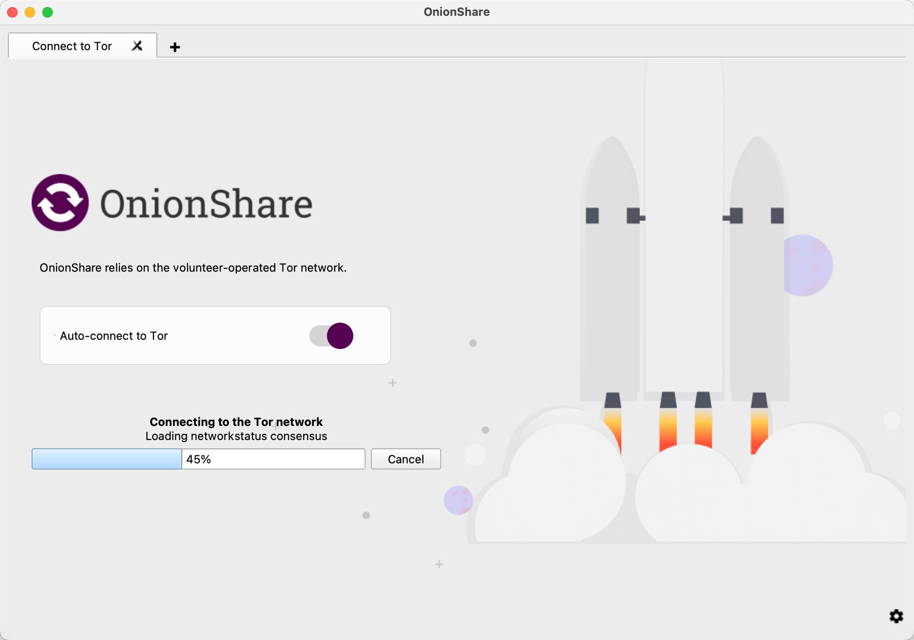

OnionShare 2.6 has a quickstart screen, automatic censorship circumvention, and better packaging
I'm excited to announce that the OnionShare team just released version 2.6! You can download it from onionshare.org. Here are the main things that are new.
Quickstart screen
When you opened OnionShare it used to immediately try connecting to Tor, and if the connection failed, or if you canceled it, it would then let you adjust your Tor settings. We've now introduced a "quickstart" screen which lets you choose to change your Tor settings before it tries to connect if you'd like to. (And it also has an awesome rocket ship launching animation.)
This is important when it comes to internet censorship. OnionShare keeps its users anonymous by using Tor. Because Tor is a common way to bypass censorship, networks that block part of the internet also often block Tor. There are even entire countries, like Russia, Iran, and China, that try to block Tor. If you're in one of those countries and you open OnionShare, it's better that your computer doesn't automatically connect to a Tor node IP address, instead giving you a chance to change your Tor settings to bypass censorship, like by using a Tor bridge, before you connect.
Automatic censorship circumvention
Bypassing censorship sounds complicated, but with Tor it's actually pretty easy, and this release of OnionShare makes it even simpler. If you try connecting to Tor and it fails because of internet censorship, OnionShare will then let you try to automatically bypass it. You just click a button and OnionShare will automatically figure out the best way to bypass the censorship that you're currently facing, and then connect to Tor. That's it.
Behind the scenes, OnionShare use's Tor Project's new distribution system for bridges called rdsys, or the "censorship API". Using a technique called domain fronting, OnionShare makes a connection to rdsys that's disguised as an innocuous request to a major CDN, the kind that you make thousands of times a day as you use the web, asking for ideal settings. Based on the country that you're connecting from, the rdsys server makes its best guess at what your Tor settings should be to bypass censorship. It might tell you to connect using an obfs4proxy bridge, and provide you with IP addresses for some bridges that aren't block in your country; or it might tell you to connect using Snowflake. Tor keeps its rdsys database updated based on the current state of internet censorship.
Late last year, Russia started blocking Tor. While we were developing this feature we had a friend in Russia test it for us. They went to a public wifi network and opened an early build of OnionShare. They tried connecting to Tor, which failed because it was blocked, and then tried automatically bypassing it, and it succeeded. This should make bypassing censorship much simpler for OnionShare users.
Better packaging
Finally, this release includes a lot of new work going into automating packaging. OnionShare is now available for these platforms:
- Windows (64-bit)
- Windows (32-bit)
- macOS (Intel, but it runs on Apple Silicon and some day we'll support it natively)
- Linux: Flatpak (x86_64 and arm64)
- Linux: Snapcraft (amd64, arm64, and armhf)
I'm particularly excited about the Snapcraft work because this makes it much simpler to install in ARM-based Linux systems, such as Raspberry Pis. All you have to do, after installing Snap, is run: sudo snap install onionshare. Then you can run the command line version of OnionShare with onionshare.cli.
The new Snapcraft packaging also automatically builds and pushes changes to the Snapcraft edge channel. So if you want to try the very latest version of OnionShare, basically the code in the main branch on github, you can install that by running: sudo snap install onionshare --edge.